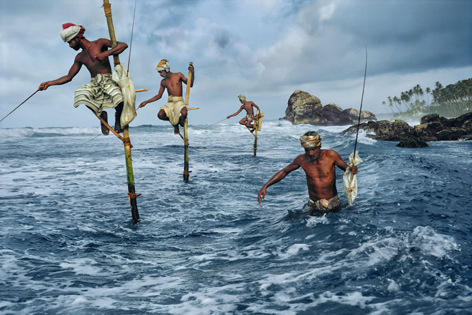

Steve McCurry in Rome
On Sunday morning, Simon, his teenage nephew and I tossed around the prospects of the day. For lunch we stayed home and ate steak, artichokes and leftover lasagna. Then we walked to the MACRO in Testaccio where Steve McCurry’s photograph exhibition is still in full swing, and will be until spring. You can’t miss the posters advertising the “Afghan Girl” buzzing around Rome on the sides of buses, lingering in stuffy metro corridors, her eyes quivering out a passers-by: those eyes. And eyes were the second thing I noticed once I was inside.
The first thing I noticed was how the vivid photos were displayed, utilizing available light and space. Interlinked domes, airy and bright, spread over the floor like so many modern igloos. And the photos in each dome stuck to a theme, so it was easy to get the gist of the photographs, and understand, somewhat, McCurry’s vision, the thread of his oeuvre: war, children, play, portrait, candid, Asia, sacred places, places of suffering, of dignity…
But it was the eyes that stuck with me, especially the eyes of the children. They seemed to be looking at me in full understanding of the world they were born into, the world full of shortcomings and failures. They expressed a humanity they could hardly be conscious of, simultaneously betraying their precarious position, and yet they resonated with such surety and firmness. How is it that we tear down the world, almost willing it to be destroyed, as we populate it? How is it that I, so much older than them, am so much more sheltered?
The following photograph amazed me similarly, but also got me with its beautiful aesthetic. The contrast of the tumultuous sea contrasts so completely with the stillness of the fishing men.

Fishermen, Weligama, South coast, Sri Lanka, 1995 by Steve McCurry. Photo from here
Leaving the MACRO late in the afternoon, I had the sense of having travelled, to India, to Malaysia, to Sri Lanka, Afghanistan, but also of having gotten as close as one can get, through photographs, to the lives portrayed within. If you are in Rome between now and April 29, I recommend it. More info here.
· · · · · · · · · · · · · · · · · · · ·